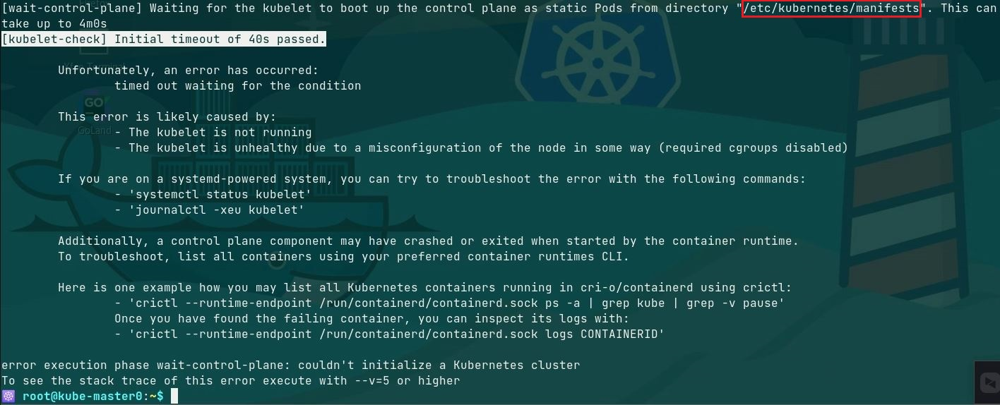
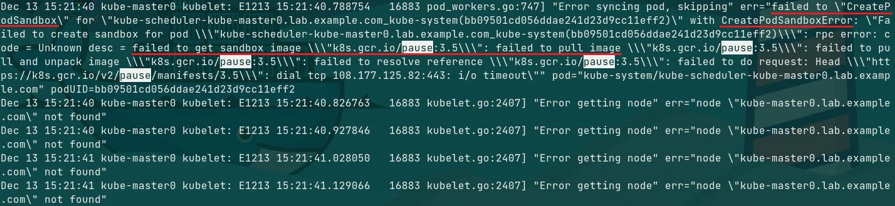
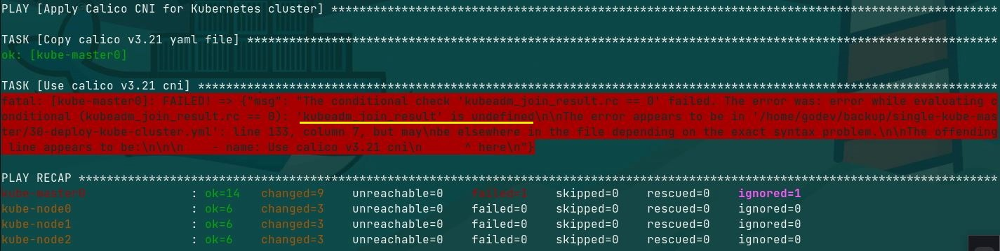
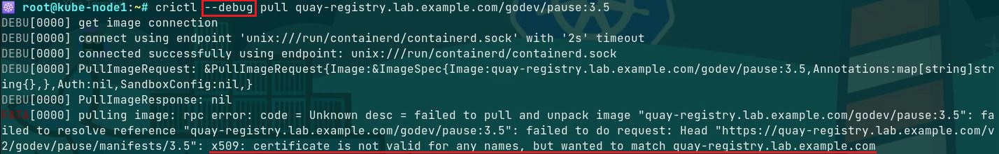
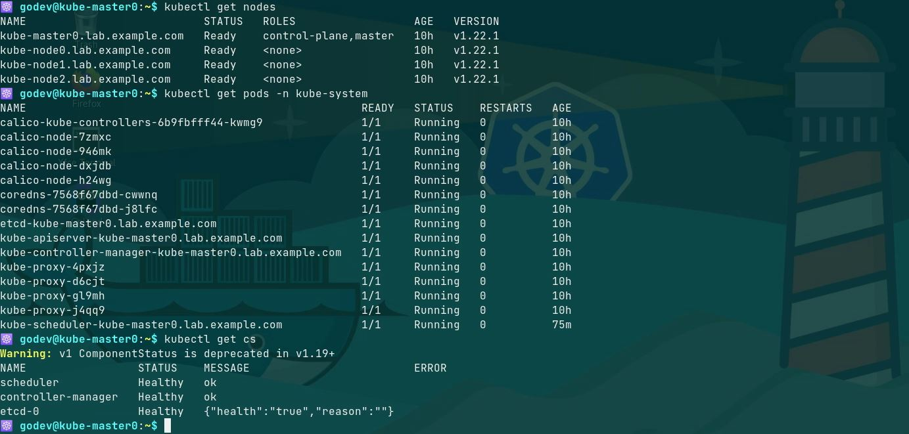

文档目录：
- 项目目的
- 实施环境
- 需要更改的参数
- 实施过程中遇到的问题与解决方法
- Kani 的使用方法
- 参考链接
项目目的：
- 虽然目前具有大量的 Kubernetes 集群自动化部署解决方案，其中官方的
KubeSpray即为使用 Ansible 的方式部署，但想尝试自己手动造轮子，因此创建了 Kani 项目。 - Kani 项目的目的在于使用 Ansible 快速部署与管理 Kubernetes 集群及其相关组件。
- 当前版本中 Kani 支持：
ContainerdruntimeCalicoCNIRed Hat Quay v3 registry
- Kani 的可选功能包括部署与管理其他额外的云原生、DevOps 与 GitOps 组件，如下所示：
- 容器镜像仓库：Red Hat Quay v3 registry
- 代码仓库：GitLab
- 可点击 此处 获取 Kani 项目 👋
实施环境：
- OS 版本：
CentOS Linux release 7.9.2009(Core) - kernel 版本：
5.13.12📌 可使用
elrepo repository升级 Linux kernel。 - Ansible 版本：
2.9.25 - Containerd 版本：
1.5.5 - Kubernetes 版本：
v1.22.1 - 准备一个节点作为 Ansible 控制节点用于运行 Kani，并安装
ansible、rhel-system-rolesRPM 软件包。 - 使用普通用户克隆该项目，笔者环境中使用
godev用户，该用户与项目目录中的vars/all.yml中的operator_user为同一用户。💥 使用 Kani 时，需注意将您的普通用户与 operator_user 保持一致！
🤘 需要更改的参数：
- 根据您的实际环境在以下文件中更改对应的参数：
ansible.cfg(Ansible config file):- remote_user：各个 Ansible 受管主机上的登录用户
files/kubeadm-conf.yml(kubeadm config file):- localAPIEndpoint.advertiseAddress：master 节点的 API 端点监听地址
- localAPIEndpoint.bindPort：master 节点的 API 端点监听端口
- nodeRegistration.criSocket：master 节点 containerd 的 Unix 套接字文件
- nodeRegistration.name：master 节点的 FQDN
- nodeRegistration.taints：为 master 节点添加不可调度的污点
- mode：kube-proxy 的工作模式
- imageRepository：指定容器镜像的仓库地址
- KubernetesVersion：集群的安装版本
networking.serviceSubnet：集群的 Service Cluster IP 网段networking.podSubnet：集群的 Pod IP 网段- cgroupDriver：指定控制组驱动类型
clusterDNS：集群的 CoreDNS 的 Service Cluster IP
inventory-kubecluster(Ansible inventory file):- 根据您所在的场景修改短主机名，此处为笔者所在的环境节点信息。
vars/all.yml(variables file):💥 根据您所在的环境修改
!!! NEED TO EDIT !!!中的参数，其余参数可选择性地修改。- gateway：所有 Kubernetes 节点的的默认网关
- nic：所有 Kubernetes 节点连接默认网关的网卡接口
- operator_user：Ansible 控制节点与受管主机上远程连接的普通用户
👉 operator_user 与 ansible.cfg 中的 remote_user 相同。 - kube_master_node：master 节点的短主机名
💥 该参数与 inventory-kubecluster 中的短主机名相同。
实施过程中遇到的问题与解决方法：
- Kubernetes 部署过程中的部分报错，如下所示：
kubeadm init初始化 master 节点失败，并且报错node not found。由于所有的pause infra images未标识（tagged）k8s.io/pause:3.5，因此在 master 节点上的kubelet不能创建sandbox。
 - playbook 中的
register注册变量不能在不同的 play 间引用。
 - 由于使用
containerd来运行容器，因此ctr、crictl与nerdctl可被用来获取容器镜像与容器自身的状态。但是，仅仅crictl可直接使用 containerd 配置文件/etc/containerd/config.toml。crictl 可加载配置有 quay registry endpoint、user 与 password 的配置文件。 - 若使用自签名的 CA 证书，crictl 不能从 quay 容器镜像仓库拉取镜像，并且总是报错
x509 cert file error：
 - 通过配置在 containerd 配置文件中的
insecure_skip_verify = true跳过 tls 验证才能拉取镜像。
🚀 Kani 的使用方法：
- Kani 项目的目录结构，如下所示：
1
2
3
4
5
6
7
8
9
10
11
12
13
14
15
16
17
18
19
20
21
22
23
24
25
26
27
28
29
30
31
32
33
34
35
36
37
38
39
40
41
42
43
44
45
46┌─[godev][paas-ctl][~/kani]
└─➞ tree .
.
├── 00-general-prepare-kube.yml
├── 01-containerd-kube-deploy.yml
├── 02-kube-cluster-calio-deploy.yml
├── 03-post-kube-deploy.yml
├── ansible.cfg
├── destroy-kube-cluster.yml
├── files
│ ├── cni
│ │ └── calico-v3.21.yml
│ ├── containerd
│ │ ├── config.toml
│ │ ├── containerd-rootless-setuptool.sh
│ │ ├── containerd-rootless.sh
│ │ ├── cri-containerd-cni-1.5.5-linux-amd64.tar.gz # 该文件可从下文百度网盘下载
│ │ └── nerdctl
│ ├── kube-utils
│ │ ├── k9s_Linux_x86_64.tar.gz
│ │ ├── kubeadm-conf.yml
│ │ ├── kube-dashboard-admin.yml
│ │ └── kube-dashboard-v2.3.1.yml
│ ├── quay
│ │ └── deploy-quay-registry.sh
│ ├── repos
│ │ ├── docker-ce.repo
│ │ └── kubernetes.repo
│ ├── rpms
│ │ ├── kubeadm-1.22.1-0.x86_64.rpm
│ │ ├── kubectl-1.22.1-0.x86_64.rpm
│ │ ├── kubelet-1.22.1-0.x86_64.rpm
│ │ └── kubernetes-cni-0.8.7-0.x86_64.rpm
│ └── vimrc
├── inventory-kubecluster
├── job-for-terminate-kube.yml
├── kani
├── kube-reverse
├── provision-quay-registry.yml
├── templates
│ └── hosts.j2
├── terminate-kube-cluster.yml
└── vars
└── all.yml
9 directories, 32 files
- 由于 GitHub 对于上传文件的大小限制（100 MiB），
files/containerd/cri-containerd-cni-1.5.5-linux-amd64.tar.gz可从 百度网盘 下载，下载密码为 apdl。- 💥 由于在 aliyun yum 源中的 kubeadm、kubectl、kubelet 与 kubernetes-cni 的 rpm 软件包可能存在无法获取的情况，因此已将软件包同项目一起上传！
- 更改所有文件中的参数后，使用如下命令部署集群：
1
2
3
4
5
6
7
8
9
10
11
12
13
14
15
16
17
18$ cd kani
$ chmod +x ./kani
$ ./kani --help
# 查看 kani 的使用方法
Rapid deploy kubernetes cluster and elements by ansible
Usage:
kani [command]
Available Commands:
deploy-kube Deploy single master node kubernetes cluster with calico cni
terminate-kube Terminate kubernetes master and worker nodes
destroy-kube Destroy and prepare to re-install kubernetes cluster
config-quay Config and run quay config container
deploy-quay Deploy quay registry
$ ./kani deploy-kube
# 部署 Kubernetes 集群
🤘 注意：在 kubeadm init 初始化 master 节点后，由于还未将其他 node 节点加入至集群中，此时各个 node 节点上的
kubelet守护进程启动失败，可能处于active (auto-restarting)状态，查看节点 /var/log/messages 中存在大量的/etc/kubernetes/pki/ca.crt not found的报错，这是由于 kubeadm join 还未将 node 节点加入集群以及还未同步 master 节点的 CA 证书所致，待 node 节点加入集群中后 kubelet 状态将恢复active状态。
Kubernetes 集群部署后的 node 与 pod 状态：
🤘 注意：Kubernetes 集群中
coredns pod在 Calico CNI 未完全 ready 时将处于pending状态，直至所有 calico pod 处于 Running 状态时也将处于 Running 状态。停止 Kubernetes 集群：
1
$ ./kani terminate-kube
破坏与重装 Kubernetes 集群：
1
$ ./kani destroy-kube
（可选操作）部署
Red Hat Quay v3 registry并与 Kubernetes 集群集成：
若需使用Red Hat Quay v3 registry作为容器镜像仓库，可使用如下命令：1
2
3
4
5
6$ ./kani config-quay
# 第一步：启动 Quay 的的 Web UI 配置界面
$ firefox &
# 第二步：使用 Web UI 配置 Quay
$ ./kani deploy-quay
# 第三步：部署 Quay可通过 Red Hat Quay v3 registry 原理与实现 文档了解如何通过 Web UI 配置 Quay。
配置 Kubernetes 集群连接 Quay 与拉取镜像：
若在集群规划时需将 Quay 与 Kubernetes 集群连接的话，需在运行 kani 命令前更改好
files/containerd/config.toml文件，以保证集群部署完成后可与 Quay 对接。
其中username与password为 Quay 中的登录用户名与密码，如下所示：1
2
3
4
5
6
7
8
9
10
11
12
13
14
15
16
17
18
19
20
21
22
23
24
25
26[plugins."io.containerd.grpc.v1.cri".registry]
config_path = ""
[plugins."io.containerd.grpc.v1.cri".registry.auths]
[plugins."io.containerd.grpc.v1.cri".registry.configs]
[plugins."io.containerd.grpc.v1.cri".registry.configs."quay-registry.lab.example.com".tls]
insecure_skip_verify = true
# 使用自签名 CA 证书也需配置为 true
[plugins."io.containerd.grpc.v1.cri".registry.configs."quay-registry.lab.example.com".auth]
username = "godev"
password = "redhat321"
# Quay 中需配置的用户名与密码
[plugins."io.containerd.grpc.v1.cri".registry.headers]
[plugins."io.containerd.grpc.v1.cri".registry.mirrors]
### modified by hualf to configure registry mirror
[plugins."io.containerd.grpc.v1.cri".registry.mirrors."docker.io"]
endpoint = ["https://bqr1dr1n.mirror.aliyuncs.com"]
[plugins."io.containerd.grpc.v1.cri".registry.mirrors."k8s.gcr.io"]
endpoint = ["https://registry.aliyuncs.com/k8sxio"]
[plugins."io.containerd.grpc.v1.cri".registry.mirrors."quay-registry.lab.example.com"]
endpoint = ["https://quay-registry.lab.example.com"]
# 内部私有的容器镜像仓库
# containerd 守护进程可访问的公共与私有容器镜像仓库若在 Kubernetes 集群部署完成后再与 Quay 集成，需更改每个运行 Containerd 节点的配置文件，再重启每个节点上的 containerd 守护进程，才能保证与 Quay 的对接。
- 在笔者的环境中，containerd 配置文件中已配置了
godev用户与相应密码用于连接 Quay 与拉取镜像，因此，在 Quay 中需创建对应的用户。
参考链接：
- Kubernetes Docs - 使用 Kubespray 安装 Kubernetes
- Kubernetes Docs - Bootstrapping clusters with kubeadm
- Install Calico